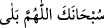
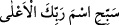
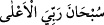
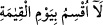
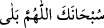
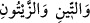
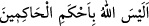
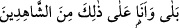
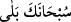
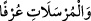
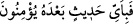
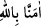

daha kolaydır. Çünkü aslî unsurlar ve ana madde -ki o kuyruk sokumundaki kemiktir-
mevcuddur.
Rivâyet edilir ki Peygamber (s.a.) Efendimiz bu âyeti okuyunca, Allah’ı diriltmeye
muktedir olmamaktan tenzih etmek ve bunun olacağını isbat için, “
/seni
tenzih ederiz ey Allah’ım! Evet muktedirsin” derdi.[204] Bir başka rivâyette ise: “Belâ
vallâhi! Belâ vallâhi!”[205] derdi.
İbn Abbas (r.a.) şöyle der:
/A’lâ sûresini okuyan -ister imam olsun,
ister cemâat- “
” desin.
/Kıyâme sûresini okuyan sûrenin
sonuna vardığında -ister imam olsun ister cemâat- “
” desin.
Bir hadis-i şerifte şöyle buyurulmuştur: “Sizden herhangi birisi
/Tîn
sûresini okuduğu zaman sûrenin sonundaki “
/Allah hüküm
verenlerin en üstünü değil midir” (Tin, 95/8) âyetini okuduğunda, “
/evet Allah’ım! Sen hâkimler hâkimisin ben buna şâhid
olanlardanım” desin.[206]
Kıyâme sûresini okuyup da, “
/peki onun ölüleri tekrar
diriltmeye gücü yetmez mi?” âyetini bitirince “
/Seni tenzih ederiz, evet”
desin.
/Mürselât sûresini okuyup da “
/Onlar ondan sonra
hangi söze inanacaklar” âyetini bitirdiğinde de “
/Allah’a îman ettik.” [207]
desin.
Bu âyet-i kerîmede Allah Teâlâ’nın dünya ehli ölülerini dünyadan yüz çevirmek
âhirete ve Mevla’ya yönelmek sûretiyle dirilttiğine, ölü nefisleri üzerlerine kalplerin
nurlarını salarak canlandırdığına, zâlim ve kâfir nefislerin zulmeti/karanlığı altındaki
ölü kalpleri rûhun, sırrın ve hafînin nûru ile dirilttiğine işâretler vardır. Kim Allah’a
âcizlik isnâd ederse O’nu inkâr etmiş olur. Bizler Allah’tan bizleri korumasını ve güzel
bir âkıbet nasip etmesini diliyoruz.[208]
[203]. Bk. İbn Kesir, IV, 451
[204]. İbn Kesir, IV, 452
[205]. Bk. ed-Dürru’l-mensûr, VI, 296
[206]. Bunu namaz dışındaki okuyuşlarda yapmalılar.
[207]. Ebû Davud, salat 150; Tirmizi, tefsir (95)
[208]. Allah’ın yardım ve inâyetiyle Kıyâme sûresinin tefsiri sona erdi.